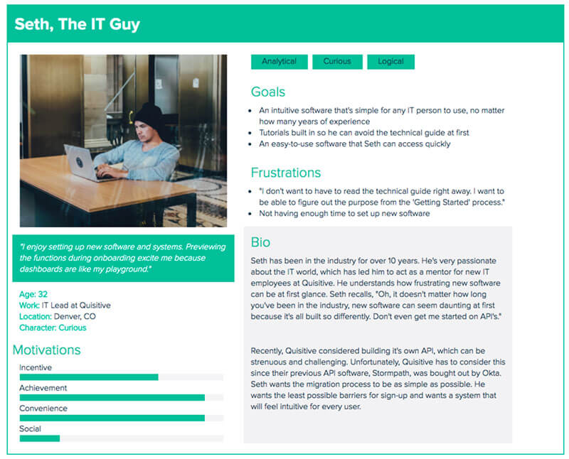
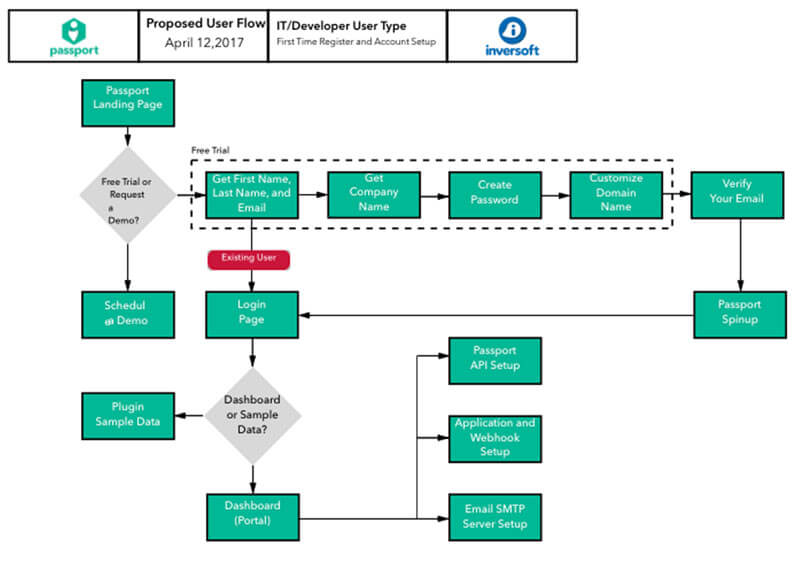
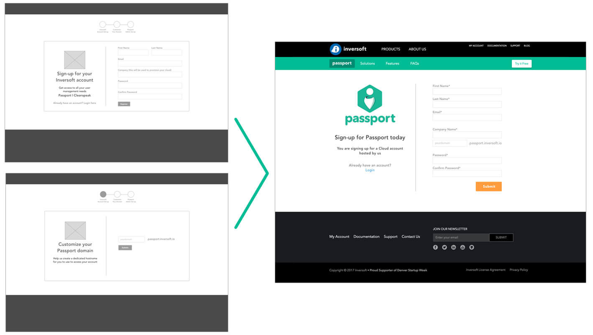

I worked with two other UX Designers on this project for Inversoft, a user management software company based in Denver, CO. In meeting with the client, we were able to determine that their greatest need was improving the user experience for the onboarding process of their newest software, Passport.
We had three weeks to collaborate with our client, establish a UX problem, and develop an effective solution.
Our initial research involved meeting with Inversoft to understand the company and their Passport software, as well as establish what their major UX need was.
We were able to determine that the two major issues were the complexity of the onboarding process and the software's dashboard or initial login page had no content.
Our research consisted of the following UX processes
Based on the research we established one user type and developed a persona and user flow for the typical IT professional who would be implementing this software.
 The ideation phase of the project involved sketching, developing low fidelity wireframes and high fidelity mockups. We developed initial low fidelity wireframes for our first solution and after usability testing and client feedback, we determined that we could still simplify the onboarding process. We therefore developed a second solution that we did additional usability testing on. It was this second version that we turned into a high fidelity mockup and prototype.
Our ideation steps were:
We developed wireframes and mockups using Sketch 3 and turned the high fidelity mockups into a prototype to use for testing with InVision.
We performed four rounds of usability testing. For the first round we tested IT professionals and UX experts on the current onboarding process and dashboard impressions. The feedback from the first round was used to inform our initial design. The second round involved paper testing of our low fidelity wireframes, while the third had people look at the high fidelity mockups. The final round was performed using our final prototype.
We used the testing to inform the overall flow of the onboarding process and the layout of the dashboard.
We developed a streamlined onboarding process, that prevents barriers of entry and allows for quick access to the software. Forms provide inline validation and confirmation pages provide feedback about next steps. The dashboard has a 'Get Started' checklist, so users know exaclty what information needs to be provided for the software to function correctly. Also, included in the dashboard is information and charts about logins and other user management data.